Input
Below you will find a list of all information necessary to take user input within spark.
All of the examples below assume you have the boilerplate from the notebook setup in your code
Mouse position
To get the current mouse position you can use the following variables:
- mouse_x: (int) The value of the x position of the mouse
- mouse_y: (int) The value of the y position of the mouse
Example(s):
Drawing a circle at the mouse position constantly (remember it will draw over itself over and over again and leave a trail):
1 2 3 4 5 6 7 | |
Results in:
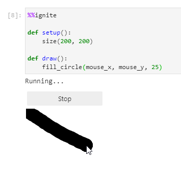
Mouse pressed
To find out if the mouse has been pressed you can use the variable:
- mouse_is_pressed: (bool) True if the mouse has been pressed, otherwise False
Example(s):
Rectangle will be red if the mouse has been pressed, otherwise it will be blue
1 2 3 4 5 6 7 8 9 10 11 12 | |
Results in:
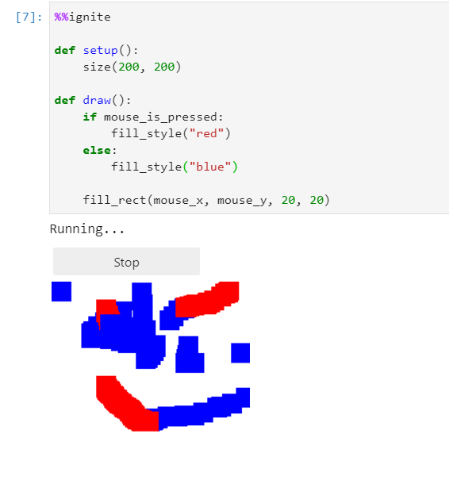
Getting text from user
To ask the user for an answer to a question you can use:
1 | |
Keep in mind, whatever the user types in will always be a string. See the second example for how to convert to other types.
Parameters
- message: (str) The text you want to show the user when asking for input
Example(s):
Ask the user for their name, then display it to the screen:
1 2 3 4 5 6 | |
which results in:
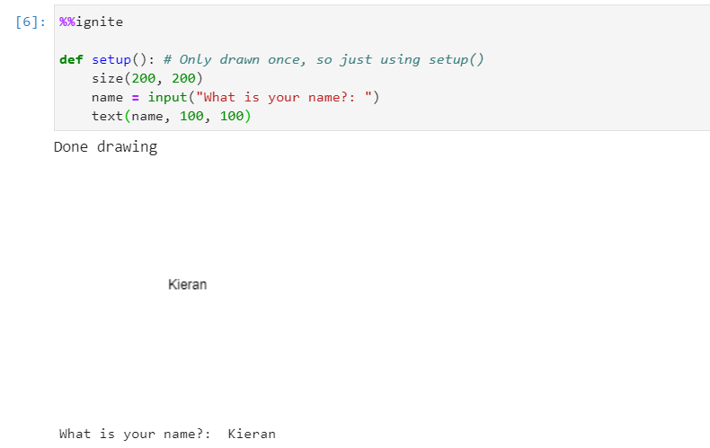
Ask the user for a diameter. We need to convert the string to an integer, we can do this using int(). Draw a circle of that diameter at (100, 100):
1 2 3 4 5 6 | |
which results in:
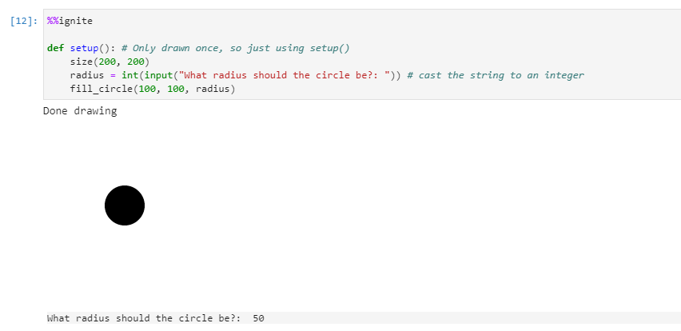
Check for mouse presses
Spark features multiple ways to check for user mouse presses:
| Name | Type | Description |
|---|---|---|
| mouse_is_pressed | Variable | A boolean variable that is True when a mouse button is pressed |
| mouse_down() | User defined function | A definable function that activates when a mouse button is pressed down |
| mouse_up() | User defined function | A definable function that activates when a mouse button is released |
Notes
- All of these variables fire on any mouse button press (left mouse click, right mouse click, or scroll wheel click)
- Mouse events are only captured when the mouse is inside the canvas boundary
mouse_is_pressed
A boolean that is True when any mouse button is pressed
Example(s):
Draw a square at the (mouse_x, mouse_y) position when the mouse is pressed
1 2 3 4 5 6 7 8 | |
Results in:
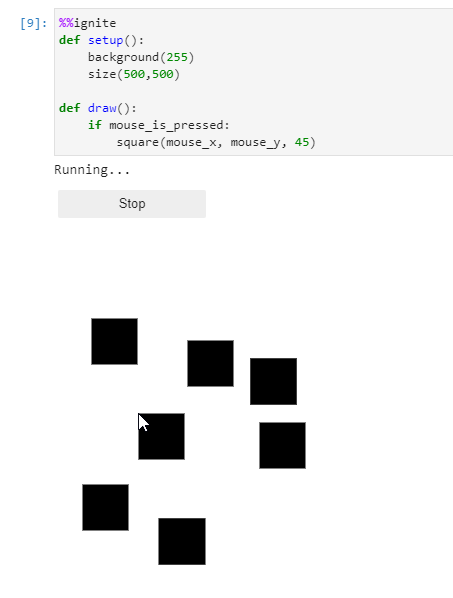
mouse_down()
1 2 | |
This is a user definable function that activates when any mouse button is pressed down.
Notes
- This function is handy when you want to do something in a
draw()loop one time on mouse press.mouse_is_pressedwill constantly fire in adraw()loop, whereasmouse_down()will fire once per event
Example(s):
Print "Mouse Button Pressed Down" if a mouse button is pressed down
1 2 3 4 5 6 7 8 9 10 | |
Results in:
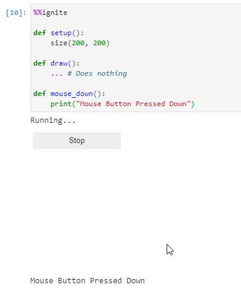
mouse_up()
1 2 | |
This is a user definable function that activates when any mouse button is released after being pressed down.
Notes
- This function is handy when you want to do something in a
draw()loop one time on mouse release.mouse_is_pressedwill constantly fire in adraw()loop, whereasmouse_up()will fire once per event
Example(s):
Print "Mouse Button Released" if a mouse button is released after being pressed down
1 2 3 4 5 6 7 8 9 10 | |
Results in:
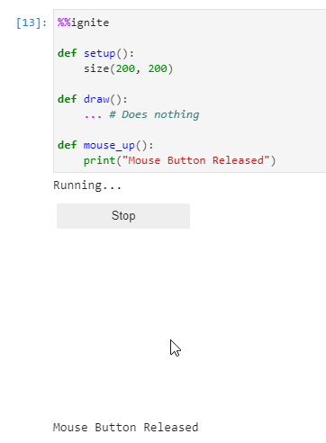
Check for key presses
Spark features multiple ways to check for user key presses:
| Name | Type | Description |
|---|---|---|
| key | Variable | A string of what key was last pressed |
| keys_held() | Function | A function that returns True if the provided key is held |
| key_pressed() | User defined function | A definable function that activates when any key is pressed |
| key_released() | User defined function | A definable function that activates when any key is released |
| key_repeated() | User defined function | A definable function that activates when any key is held |
Notes
- Key events only trigger when the mouse is inside the canvas
key
A string that is the last key event (a key being pressed, released, or held down). So for example if you press, hold or release Shift then key == "Shift".
Notes
- This variable does not clear, meaning if a key is pressed it will remain the value until a new key is pressed
- This variable will be the uppercase letter if Shift + a letter is pressed i.e. Shift + A would be
key == "A" - This variable will be a symbol if Shift + a number is pressed i.e. Shift + 3 would be
key == "$"
Special Keys
| Key | Value |
|---|---|
| Up | key == "ArrowUp" |
| Down | key == "ArrowDown" |
| Left | key == "ArrowLeft" |
| Right | key == "ArrowRight" |
| Tab | key == "Tab" |
| Ctrl | key == "Control" |
| Alt or Option | key == "Alt" |
| Esc | key == "Escape" |
| Win or Cmd | key == "Meta" |
| Backspace | key == "Backspace" |
Example(s):
Print out each key as they are pressed (I pressed just the A key in this example)
1 2 3 4 5 6 7 8 | |
Results in:
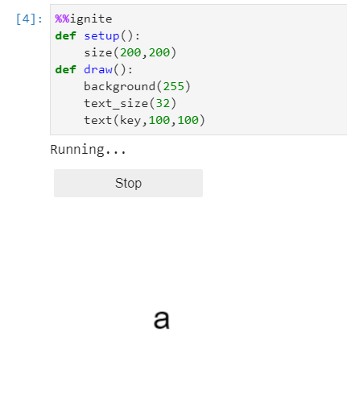
keys_held()
1 | |
Parameters
- key: (str) The key you want to check for
Returns
bool; Returns True if the provided key is held, else False.
Print "b key held" if the B key is held
1 2 3 4 5 6 7 8 | |
Results in:
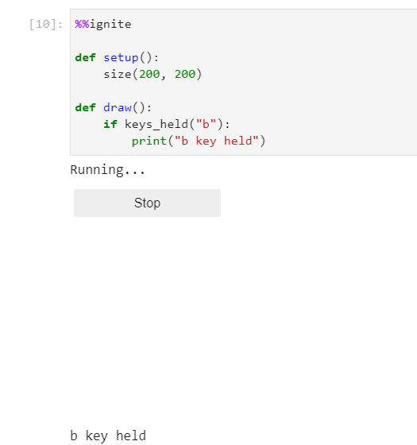
key_pressed()
1 2 | |
This is a user definable function that activates when any key is held.
Example(s):
Print a key if it's pressed
1 2 3 4 5 6 7 8 9 10 | |
Results in:
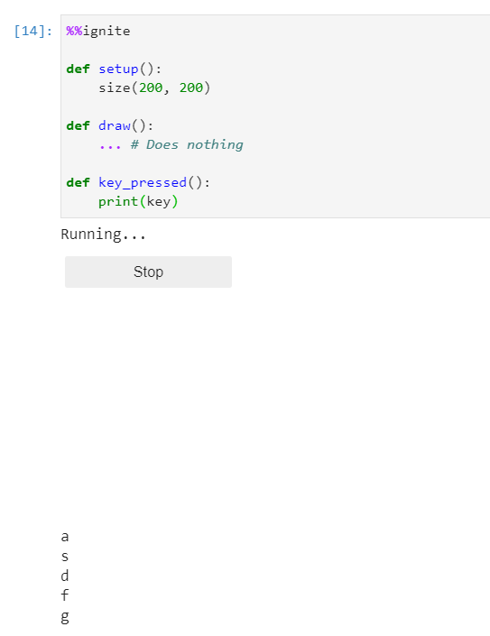
key_released()
1 2 | |
This is a user definable function that activates when any key is released.
Example(s):
Print a key if it's pressed
1 2 3 4 5 6 7 8 9 10 | |
Results in:
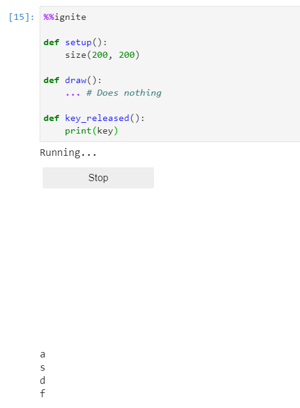
key_repeated()
1 2 | |
This is a user definable function that activates when any key is held. Note this function continuously activates for as long as the key is held.
Example(s):
Print a key if it's held
1 2 3 4 5 6 7 8 9 10 | |
Results in:
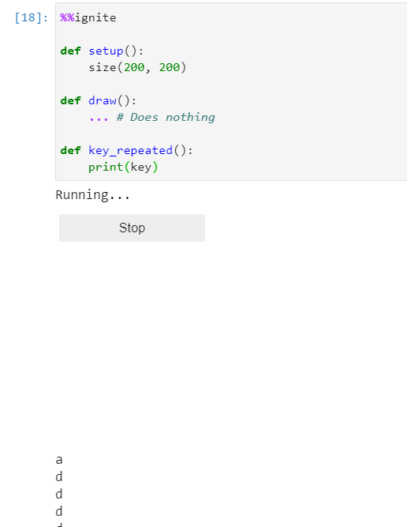